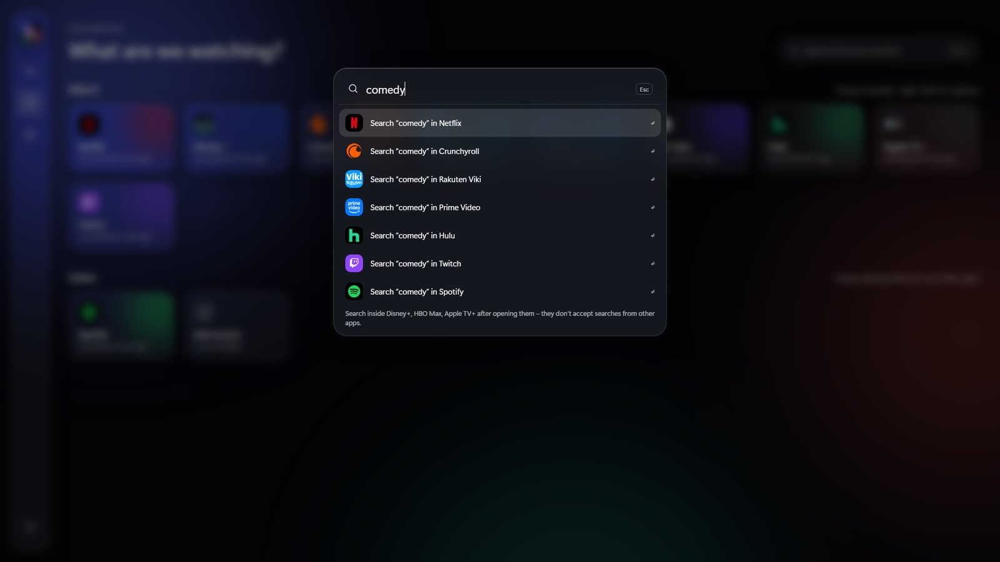
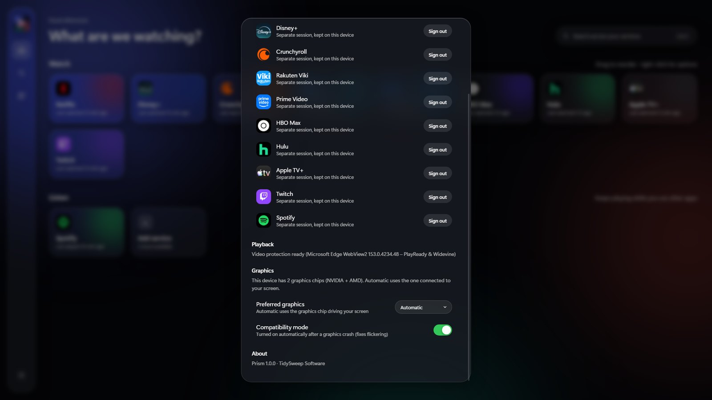
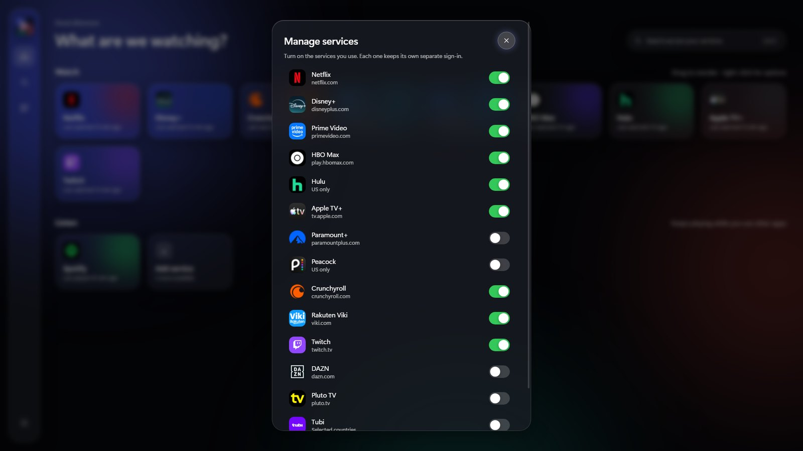

Prism Video brings the streaming services you already use into one calm, modern window. Pick a service and its own official website opens inside Prism Video: no browser tabs, no clutter, no separate app for every service.
Most of us use several streaming services, each in its own app or browser tab. Prism Video puts them on one home screen. Pick a service and its own official website opens inside Prism Video, ready to watch.
Each service runs in its own private space, so you stay signed in to every account and nothing is shared between them. Switch between services from the dock in one click, search once and send the search to the service you choose, and keep music playing while you browse.
Prism Video is made to be easy with a mouse, a keyboard or a game controller, on a desk or on a TV connected to your PC.
Choose the services you use, drag them into your order and add or remove them any time.
Sign in to each service in its own window inside Prism Video. You stay signed in.
Open a service from the home screen and jump to another from the dock in one click.
Netflix, Disney+, Prime Video, HBO Max, Hulu, Apple TV+, Paramount+, Peacock, Crunchyroll, Rakuten Viki, Twitch, DAZN, Pluto TV, Tubi and Spotify, all one click away. Which ones you see depends on your country.

Type what you want to watch and send the search to the service you choose, without opening it first.

Move, select, go back and switch services with a game controller. Picture in picture and a full-screen focus mode keep the video in front.
If video flickers on your PC, Prism Video turns on a graphics compatibility mode by itself, and a playback test in Settings checks that Windows has the video parts it needs.

Add, remove and drag services into the order you like. The account menu has direct links to each service's sign-in and account pages.
An optional Twitch add-on claims the Twitch Drops you have earned by watching.
Click a picture to see it big.
Netflix, Disney+, Prime Video, HBO Max, Crunchyroll, Twitch, Spotify and more, in one place.
Every service keeps its own separate, private session.
Jump between services from the dock in one click.
Listen while you browse; video pauses when you leave.
Move, select, go back and switch services with a game controller.
Plus a full-screen focus mode.
Optionally claims the Twitch Drops you have earned by watching.
No ads, no tracking and no Prism Video account needed.
Prism Video is an independent app. It does not host, copy, record or change any content: every video, song and account belongs to the service you open, and you need your own subscription for services that require one. Availability depends on your country.
Yes. Prism Video opens each service's own website, so you need your own account or subscription for the services that require one.
Google does not allow its sign-in inside apps with a built-in browser. Accounts made with Google can use the service's "Forgot password" option to set a password.
No. It does not host, copy, record or change any content. Everything belongs to the service you open.
Windows 10 (version 2004 or later) or Windows 11, the Microsoft Edge WebView2 Runtime (included with Windows 11) and an internet connection.